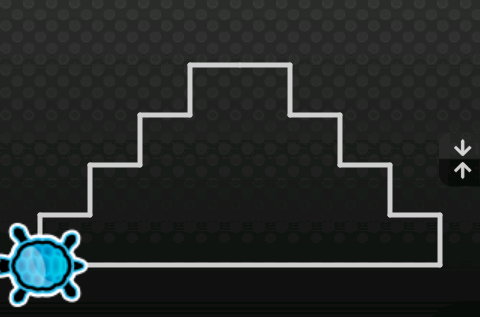

2.1 - Fonctions
Ce tutoriel montre qu'est ce qu'une fonction et comment l'utiliser pour créer un code plus élégant et surtout réutilisable.
synopsis
- prérequis
- notions de base
- portées
- fonctions
- paramères
- retour
- fonctions anonymes
- à toi de jouer
- sommaire
- << retour aux tu(r)toriaux
prérequis
Avant de lire ce tutoriel, il est important d'avoir lu : 1.3 - Boucles loops, 1.4 - Variables
notions de base
Qu'est-ce qu'une fonction est quel est son rôle ?
Il y a longtemps, les fonctions étaient appelées sous-routine, ou sous-programme. Et c'était vrai, en réalité les fonctions sont des "morceaux" de programme indépendants.
Donc la fonction est un groupe de ligne de code qui est capable de faire quelque chose de spéciale.
L'avantage des fonctions c'est qu'elles peuvent être utilisées autant de fois que l'on veut.
Ok, mais pourquoi indépendantes ? Parce que les fonctions possèdent leurs propres portées.... Oui, mais une portée c'est quoi au juste ?
portées
Dans le tutoriel des loop, nous avons vu qu'un bloque contenait des lignes de codes.
Il représente un groupe d'instruction afin de créer un comportement composé de plusieures autres comportements.
L'autre propriété d'un bloque, c'est que toute variable créer à l'intérieur n'est visible que là et à l'intérieur d'un bloque imbriqué à celui-ci ; lorsque le programme arrive à l'extérieur du bloque les valeurs sont perdus et les variables deviennent inaccessibles.
C'est ce que l'on appelle la portée d'un bloque.
Et un bloque définit à l'intérieur d'un autre définit en réalité une portée imbriquée à une autre.
En fait, la seule portée qui ne soit pas imbriquée à une autre est la portée root. La portée root est la première portée du programme. Lorsque Algoid lance un programme, il créer une portée par défaut qui est la portée parente de toutes les autres que l'on appelle root (ou racine).
|
// dans la portée root { // dans la première portée imbriquée à root { // dans la seconde portée imbriquée à la première elle-même imbriquée à root. } // retour à la première portée } // retour à la portée root, à la racine (Je pense que nous devrions lol.) |
|---|
Mais qu'en est-il de l'accès aux variables ?
|
// rien n'est accessible ici set a; // maintenant a est accessible { // a est toujours accessible set b; // a est toujours accessible // b ext maintenant accessible { // a est toujours accessible // b est toujours accessible set c; // a est toujours accessible // b est toujours accessible // c est maintenant accessible } // a est toujours accessible // b est toujours accessible // mais plus c } // seul a est accessible ici, b et c ne le sont plus |
|---|
Donc, comme les fonctions ont leur propre portée, chaque variable créer à l'intérieur n'est pas accessible ailleurs.
fonctions
Une fonction peu-t-être déclaré comme cela :
|
function () { }; |
|---|
Nous reconnaissons les {} qui définissent un bloque (et donc une portée).
Mais quelle est la différence entre une fonction et un simple bloque ?
La différence est : une fonction peut avoir un identifiant (un nom de variable en AL) et peut être appelée depuis un autre point du programme (si sa variable est accessible, rapellons nous la portée).
|
set square = function () { loop (4) { algo.go (100); algo.turnRight (90); } }; // utilisation square(); algo.jump(150); square(); |
|---|
{kind=link}
Intéressant. Nous sommes maintenant capable de dessiner un carré chaque fois que nous le souhaitons.
Pour appeller une fonction, nous avons seulement besoin de fournir son nom suivi par des parenthèses ().
Note : en AL les fonctions peuvent être déclarées sans être assignées à une variable.
Ce n'est pas le cas dans la plupart des langages comme Java, c, c++, pascal et bien d'autres qui définissent les fonctions comme cela :
void function square () { .... }
Ok, j'assume complément ce choix !!! Nous verrons pourquoi dans d'autres tutoriels à propos de la programmation fonctionnelle.
Ce choix n'est certe pas conventionnel, mais tellement puissant en réalité.... Je n'en dis pas plus pour le moment.
paramères
Nous avons vu que nous avions besoin des parenthèses pour déclarer une fonction et l'appeler.
Pourquoi avons nous besoin de parenthèses ?
Et bien pour déclarer les paramètres de la fonction.
Nous avons vu que la fonction définissait sa propre portée.
Et bien pour passer des valeurs nous avons besoin d'une solution. Cette solution c'est les paramètres.
Immaginons que nous ayons besoin de dire à notre cube quelle taille à chaqun de ses coté :
|
set square = function (size) { loop (4) { algo.go (size); algo.turnRight (90); } }; // utilisation square(50); square(100); square(150); square(200); |
|---|
{kind=link}
Yeah.... donc nous pouvons réutiliser un bloque de code et il devient possible d'en modifier quelques-unes de ses propriétés.
Maintenant nous pouvons imaginer beaucoup de choses. Pourquoi pas changer le nombre de coté lui même ?
Ok, ce n'est plus un carré, mais un polygone :
|
set polygon = function (number, size) { loop (number) { algo.go (size); algo.turnRight (360 / number); // il devient imporant de changer les angles. Souvenons nous, un tour complet fait 360 degrés. } }; // utilisation algo.turnLeft(90); polygon(4, 100); // rien n'a changé, c'est toujours un carré polygon(3, 100); // oui mais .... polygon(5, 100); // et pourquoi pas .... |
|---|

Joue avec les paramètres pour créer d'amusantes géométries.
Donc, lorsque l'on définit notre programme avec des fonctions, elles peuvent avoir autant de paramètre que nous le souhaitons.
Il devient aussi possible de les combiner avec des variables comme ceci :
|
set polygon = function (number, size) { loop (number) { algo.go (size); algo.turnRight (360 / number); } }; algo.turnLeft(90); // utilisons la dans une boucle for (set i = 2; i < 8; i++) { polygon (i, 100); } |
|---|
{kind=link}
Les possibilités sont infinies. Cela dépendra juste de notre imagination.
retour
Maintenant, imaginons que nous ayons besoin de créer une fonction pour calculer quelque chose.
Nous voulons traiter le résultat de ce calcul. Comment est-il possible de le récupérer.
Et bien, avec l'instruction return.
|
set add5times = function (a, b) { set res = (a + b) * 5; return res; }; ui.showLog(); util.log("(1 + 2) * 5 = " .. add5times(1, 2)); util.log("(2 + 3) * 5 = " .. add5times(2, 3)); |
|---|
{kind=link}
La fonction renvoie un résultat qui va être utilisé lors de la concaténation pour écrir dans le logger d'Algoid.
Comme toute valeur du langage, il est aussi possible d'utiliser le retour d'une fonction comme paramètre d'une autre ou de l'assigner à une variable.
|
set add = function (a, b) { return a + b; }; set sub = function (a, b) { return a - b; }; ui.showLog(); // calculer (1 + 2) - 3 set res = sub (add (1, 2), 3); util.log("(1 + 2) - 3 = " .. res); // calculer (1 + 2) - (8 - 7) res = sub (add (1, 2), sub (8, 7)); util.log ("(1 + 2) - (8 - 7) = " .. res); // ect.... ect.... |
|---|
{kind=link}
Conclusion, les paramètres sont les entrées de la fonction et le retour en est la sortie.
Une fonction, en AL et dans bien d'autres langages, accepte plusieurs paramètres en entrée et une seule valeur de retour (mais il est possible de contourner cette limitation avec les tableaux, à voir dans un prochain tutoriel).
à toi de jouer
ex1: réutilisation du carré
Ré-utilise la fonction square (carré) afin de dessiner un groupe de 4 carrés comme ceci :
{kind=link}
ex2: réutilisation de l'exercice précédent
Ré-utilise l'exercice précédent pour créer une fonction afin d'obtenir :
{kind=link}
ex3: escalier
Merci à Jean-Philippe Lemariey pour cet exemple. Dessine la figure suivante avec deux fonctions (marche et escalier) :
{kind=link}
ex4: escalier
Cela me donne immédiatement une idée :

{kind=link}
ex5: géométrie aléatoire
Ré-utilise notre polygone pour dessiner des géométries aléatoires comme ceci :
{kind=link}
sommaire
connaissances
Dans ce tutoriel, vous avez appris :
- qu'est-ce qu'une portée ?
- qu'est-ce qu'une fonction ?
- comment ré-écrire les exemples précédents avec les fonctions ?
- comment les utilisés pour créer du code plus élégant et réutilisable ?
fonctions utilisées :
| Fonction | Déscription |
|---|